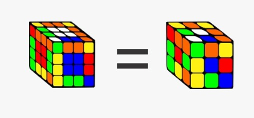
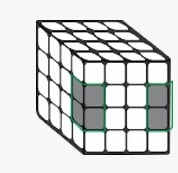
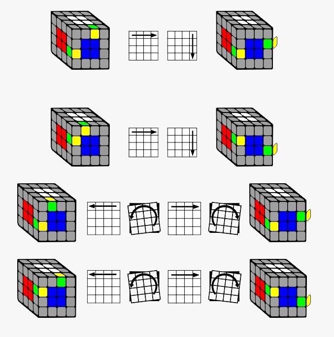
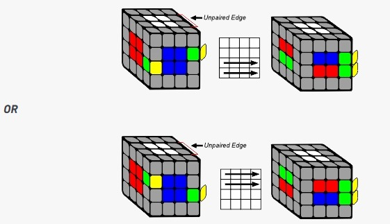
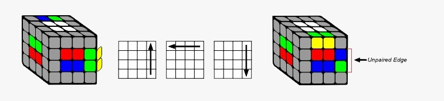
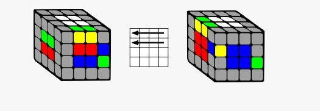
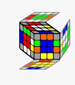
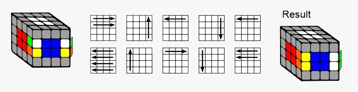

How to Solve the 4x4 Rubik's Cube
Watch the Full Tutorial
The second part of solving a 4x4 is to pair two edges with the same colours together. There are 12 edge pairs in total to make. The goal of this part is to reduce the 4x4 to a 3x3. So you can then solve it like a 3x3.
The Concept:
At the beginner level, you will move the edges that you want to pair into the front left and right slots. This will enable you to make and store the pair without disturbing the rest of the cube. The secret of this step is to always bring an unpaired edge back into the front right slot so that solved pieces are not disturbed when you restore your centers after an edge pair.
Step 1: Setup to Pair Edge
Choose two edges that you want to pair. The goal is to move two edges with the same colours into the front left and right spots by turning the outer layers ONLY.
IMPORTANT: Do not turn any inner layers for this step. This will break the centers you made in part 1.
Step 2: Pair Edge and Store
The next step is to pair the edge. Make sure that you have an unpaired edge in the top layer as this will go into the paired edge slot. This step breaks the centers, but it will be restored once you move the paired edge into the top layer.
1) Pair the edges:
2) Store the edge in the Top Face:
Move the paired edge into the top face which brings an unpaired edge into the equator layers.
3) Restore the Center:
Step 3: Repeat Edge Pairing for 10 Edges
Repeat the edge pair process. If you have no unpaired edges in the top layer, then turn the cube around.
Step 4: Last Edge Pair
For the last edge pair, you will have two “unpaired edges” with the same two different pieces. For this step, same edges need to be in the same horizontal layer on both sides. You will now perform the middle slice as if you were pairing the edges, then flip the edge and slice back to pair the edges. Note the pair will only be made with the last slice back move.
Now that you have all your centers complete and edges paired, you can solve the cube as you would a 3x3.
Possible Problem:
Whilst solving the last layer of the 3x3 stage, you may come across a problem where it seems like a last layer edge is flipped, or only two edges are swapped, which is impossible on a 3x3. This is called parity.